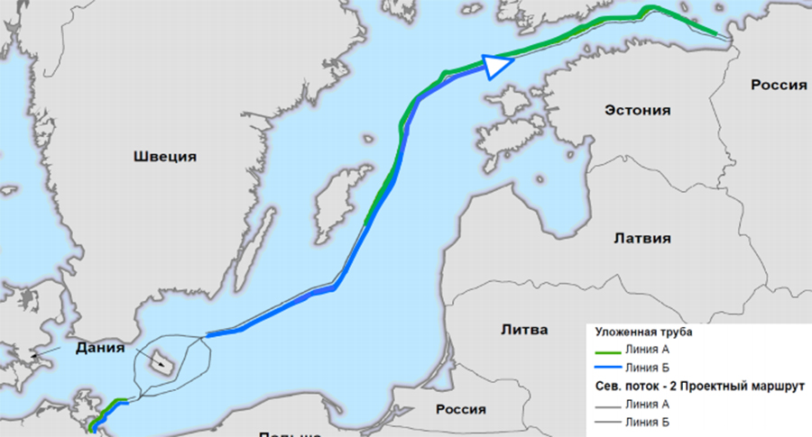

Nord Stream 2 is a Russian gas pipeline project running mostly parallel to the current Nord Stream pipeline from Vyborg to Greifswald, Germany. This second line would allow for additional gas flows directly from Russia to Western Europe up to a potential 110 billion cubic meters annually. At face value, this expansion is an economic opportunity that makes sense for Germany and other potential Western European customers. In a perfect world, it would be just that. Unfortunately, economic relations with Russia contain security risks. For precisely this reason, Nord Stream 2 faces opposition among Eastern European nations and the Baltic States, as well as from the United States. By cozying up to Russia for cheap gas, Germany is making a Faustian bargain that will not only endanger its allies to the east, but itself as well.
Russia has long used energy supplies as a foreign policy tool. From the name of the Soviet-era Druzhba (“Friendship”) pipeline on up to Russia’s nearly annual cutting of Ukrainian gas supplies during the winter, it is clear that energy supply has been a key component of Moscow’s soft and hard power tactics alike. Likewise, in cases of “state capture,” the energy sector frequently plays a major role, as in Bulgaria. In Belarus, energy is front and center in disputes between Minsk and Moscow, as the latter seeks to coerce the former into falling in lock-step with the Kremlin’s policies and demands. For the Baltic States, the Soviet-era BRELL Agreement, which connects the electrical grids of Latvia, Lithuania, Estonia, Belarus, and Russia synchronously, has given Moscow leverage since it controls the power supply. To their credit, the Baltic States have broken up Gazprom’s vertical monopoly in the regional gas market and have begun preparations to exit the BRELL Agreement, and these positive steps should serve as a model for others to reduce their dependence on Russian energy. But, as Europe’s dependence on foreign energy supplies continues to grow, many other European nations lack the political will to follow the Baltics’ lead, particularly those that do not share the threat perception evident in the east.
Energy has likewise served as a point of contention historically between the United States and the European allies. When Egypt, Jordan, and Syria attacked Israel during the 1967 Six Day War, the United States called upon the Europeans to support the Israelis. The Europeans, however, were not so keen to support Israel, even if they were sympathetic to the Israeli cause. For Britain, the decision to maintain a neutral, and even borderline pro-Arab stance, hinged on protecting its image among the Arab states in large part to secure oil supplies and retain Arab investment in British banks. In 2003, opponents of the Iraq War accused the United States of invading Iraq to secure its oil supplies, a refrain picked up by anti- American political leaders in Western Europe. Among these, Gerhard Schröder capitalized on the radical pacifism and anti-Americanism of the German left and excoriated the U.S. for Iraq, which he had previously supported. Now, Schröder, who has long been cozy with Putin, is Chairman of the Board for Nord Stream AG. This inspired the term Schroederizatsiya (“Schröderization”), which refers to the corruption of another country’s political elite. Alongside “state capture,” and often a key component of it, Schröderization is an important part of Russia’s broader hybrid warfare strategy.
Just as in 2003, Germany and France once again are leading the anti-American bloc among the Europeans. These two are also united with the Kremlin on promoting the Steinmeier Formula for peace in Donetsk and Luhansk. Should the Steinmeier Formula be adopted in Ukraine, France and Germany would be responsible for legitimizing Russia’s actions not only in Ukraine, but in Georgia and Transnistria as well. With so little else in common with Russia, it is not difficult to ascertain that Germany and France have a vested interest in securing Russian energy supplies and are thus willing to side with the Kremlin against Ukraine, NATO allies along the Eastern Flank, and the United States.
 Photo Credit: Radio Free Europe/Radio Liberty
Photo Credit: Radio Free Europe/Radio Liberty
What, then, does this all mean? Nord Stream 2, along with the southern Turk Stream route, will enable Russia to bypass old routes through Ukraine and Eastern Europe, ensuring a continuous stream of supply to Western European customers while at the same time denying that security to Eastern European nations that oppose Moscow. If Nord Stream 2 is completed, it will increase Western Europe’s dependence on Russian energy, giving Russia greater political and diplomatic leverage in its relations with those countries. While there has been much panic about divisions within NATO, the alliance has always experienced some disunity. But as many rush to defend the more complacent allies, such as Germany, they fail to realize the potential damage its recalcitrance may bring to the alliance. Though U.S. President Trump’s bluster may aggravate the Europeans, his administration has shown that in deed, the United States is hardly bent on retrenchment, and is in reality more committed to Europe than perhaps any other time since the Cold War. By cozying up to Russia on Nord Stream, however, Germany risks betraying its allies and increasing Russian influence at home. This dangerous policy alignment sets Germany down the path towards state capture and could do serious, lasting damage to NATO’s effectiveness as a defensive alliance.
Unfortunately, what good news there was on stopping Nord Stream 2 took a decidedly negative turn this week. Along with U.S. sanctions on companies affiliated with Nord Stream, Denmark was holding up progress laying the pipeline through its territorial waters via its permitting process. The Danes have been key friends to the Baltic States since Latvia, Lithuania, and Estonia regained independence in 1991. Unfortunately, Denmark approved the permits for Nord Stream 2 on Wednesday, October 30th. Should U.S. and other E.U. members’ efforts succeed in derailing Nord Stream 2, NATO can potentially avoid the situation outlined above. With Denmark’s efforts over, however, it is looking more and more bleak. Western Europe should seek instead to diversify its energy resources and where these resources come from. The Baltic model for greater self-sufficiency, coupled with American and South Korean partnerships on liquefied natural gas (LNG), serves as a potential pathway towards reducing dependence on Russian energy. Likewise, Poland has announced that it is cutting off Russian gas imports and instead turning towards the Norwegians, American LNG, and its own wells off the Norwegian coast. On energy, the Baltics and Poland serve as positive models to the rest of Europe: by reducing their dependence on Russian energy supplies, they remove political and diplomatic leverage from Moscow and reduce Russian influence on their governments. By choosing to pursue Nord Stream 2, however, Germany risks going the way of Bulgaria, where the energy sector is dominated by Gazprom and the political system now much more resembles that of Russia than when it first joined the European Union. Should Nord Stream 2 prevail, Germany will betray its allies and weaken the defensive alliance, dividing Europe between East and West once more.
 A single section of the pipeline remains incomplete around the Danish island of Bornholm, but Denmark approved the permits to build the pipeline on Wednesday, October 30. Photo credit: neftegaz.ru<
For the Baltic States, Nord Stream 2 is not an immediate threat to their energy supplies. They have greatly reduced their dependence on Russia in the energy sector. Their primary concern regarding Russia’s ability to cut off their energy supplies is not the route those supplies take, but the insecurity of their infrastructure, as many cables are unburied and unhidden, and many onshore components are poorly guarded, if at all. Nord Stream 2 is, however, a grave threat to the Baltic States’ broader security. Should Germany be a whole nation “Schröderized,” NATO will have a difficult time coping politically. Worse than that, though, NATO logistics will risk being completely thrown off track. While this scenario seems unlikely to come into fruition completely in the near-term, some aspects of the scenario will. The radical pacifism of Germany’s left and center, as well as growing anti-Americanism, open the door for Russian influence in government. Increased dependence on Russian energy will open that door wider, making Germany an even weaker link in NATO than it already is. Many Western European nations that do not have such heightened threat perception with regard to Russia, and that have a greater affinity towards the German-led European Union over NATO, will be tempted to follow Germany’s lead. For Russia, a weakened NATO is an opportunity. For the Baltics, a weakened NATO is an existential threat.